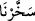

verilmişti.
(Rûzbihân) el-Baklî (r.h.) der ki: “Süleyman (a.s.) Allah’ın cemâline karşı duyduğu
aşırı sevgi sebebiyle zaman zaman doğudan batıya kadar O’nun yapmış olduğu ve sâhip
olduğu varlıklara bakmak ister ve böylece O’nun zâhirî ve bâtınî hükümranlığının (mülk
ve melekût) ilginçliklerini algılamaya çalışırdı. Allah’ın, kendisine rüzgârı âmâde kılıp
istediği yere götürtmesinin sebebi buydu. Bu, nefsânî hazlarına direnip sabretmesinin
karşılığı olarak verilmişti.”
“Onun emriyle kolayca giden…”, ifâdesi rüzgârın Süleyman’a nasıl âmâde kılınmış
olduğunu açıklamaktadır. el-Müfredât’ta der ki: (__WORD__), (__WORD__) fiilinin öznesinden haldir.
(__WORD__), yumuşak ve tatlı tatlı esen rüzgâr demektir. Arapların, (__WORD__) ifâdelerinden
gelir. Diğer bir ifâdeyle “yumuşak ve hoş” demektir.
el-Fütûhâtü’l-Mekkiyye’de der ki: “Havaya, ancak hareket edip dalgalandığında
rüzgâr (rîh) adı verilir. Bu hareket çok şiddetli olursa rüzgâr, (__WORD__) adını; şiddetli
olmadığı zaman ise (__WORD__) adını alır. Rüzgâr ruhlu bir varlıktır. Kâinâtın öteki parçaları
gibi o da akleder. Esmesi, tespih etmesi demektir. Yelkenli gemiler onun yardımıyla
giderlerken, kandil görevlileri de kandilleri onun yardımıyla söndürürler. Ateşler onun
sâyesinde tutuşur; sular ve ağaçlar onun sâyesinde harekete geçer. Denizleri o
dalgalandırır; arzı o sallar; bulutları o çıkarıp sürer.”
Âyetin mânâsı şudur: Bu rüzgârı ona, şiddetle esmeyen, yumuşak ve hoş bir rüzgâr
olarak âmâde kıldık. Rüzgârın tatlı tatlı estiğini bildiren bu âyet ile “Süleyman’ın
emrine de kasırga gibi esen rüzgârı verdik” (el-Enbiyâ 21/81) âyeti arasında bir
çelişki yoktur. Çünkü bu âyette bildirilen yumuşak rüzgârda da kasırga gibi esme
kapasitesi bulunmaktadır; ancak Süleyman’ın emrine göre hareket etmesi sebebiyle
kendisinden, böyle tatlı tatlı esen bir rüzgâr diye bahsedilmiştir.
“Onun istediği yere” (__WORD__) ifâdesi, (__WORD__)’nin ya da (__WORD__)’nin zarfıdır. (__WORD__)
fiili de Himyer dilinde (__WORD__) yâni “diledi” yahut (__WORD__) yâni “terk etti” mânâsındadır.
el-Kâmûs’ta der ki: (__WORD__), hedeflemek demektir. Buna göre ifâde, “irâde edip
hedeflediği yön ve taraflara ..” demek olmuş olur.
Bil ki, ‘onun emriyle’ ifâdesi ile rüzgârın hem kalben bir şeye yönelme hem de bir
şeyi devamlı hatırda tutma eylemini birarada gerçekleştirmeksizin sadece bir
emredivermesiyle akıp gittiği kasdedilmektedir. Allah’ın, Süleyman’dan başka hiçbir
kimseye nasip etmediği hükümranlık da budur, yoksa sırf rüzgârı âmâde kılması değil.
Zira Allah Teâlâ, gerek gökteki gerek yerdeki gerekse bunlar arasındaki herşeyi bizim
emrimize de âmâde kılmıştır. Ne var ki, şu kâinattaki maddeler, nefislerimizin himmet
ve gayretlerine göre -tabii birarada olmak şartıyla- çalışırlar. Hâsılı, bu âmâde kılınış
Süleyman’da (a.s.) olduğu gibi bizim emrimizle değil, Allah’ın emriyle
gerçekleşmektedir.